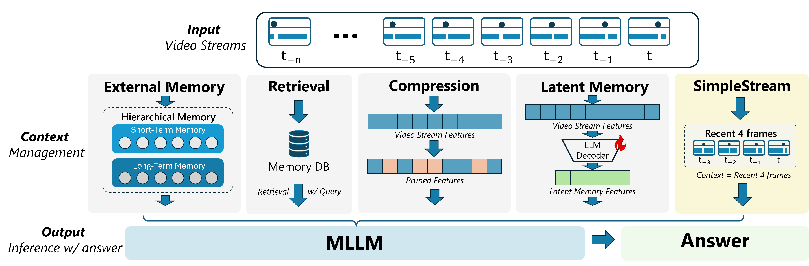
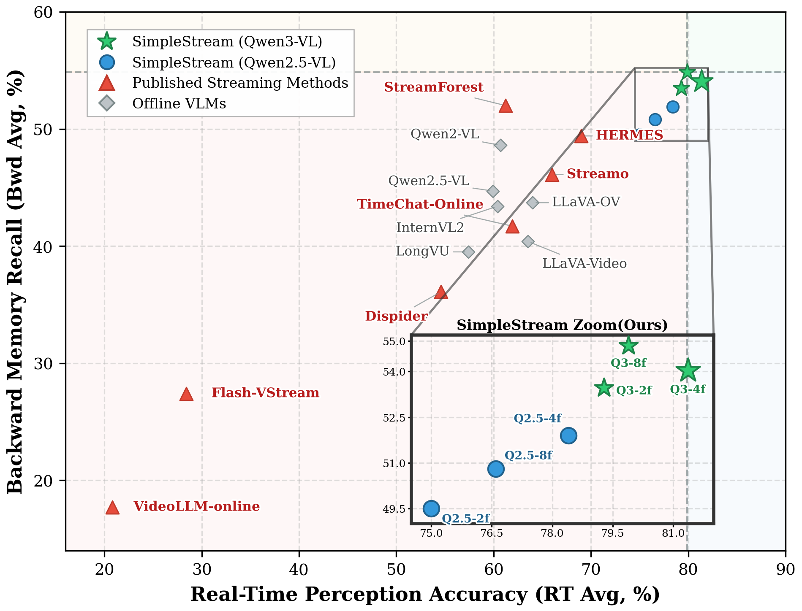
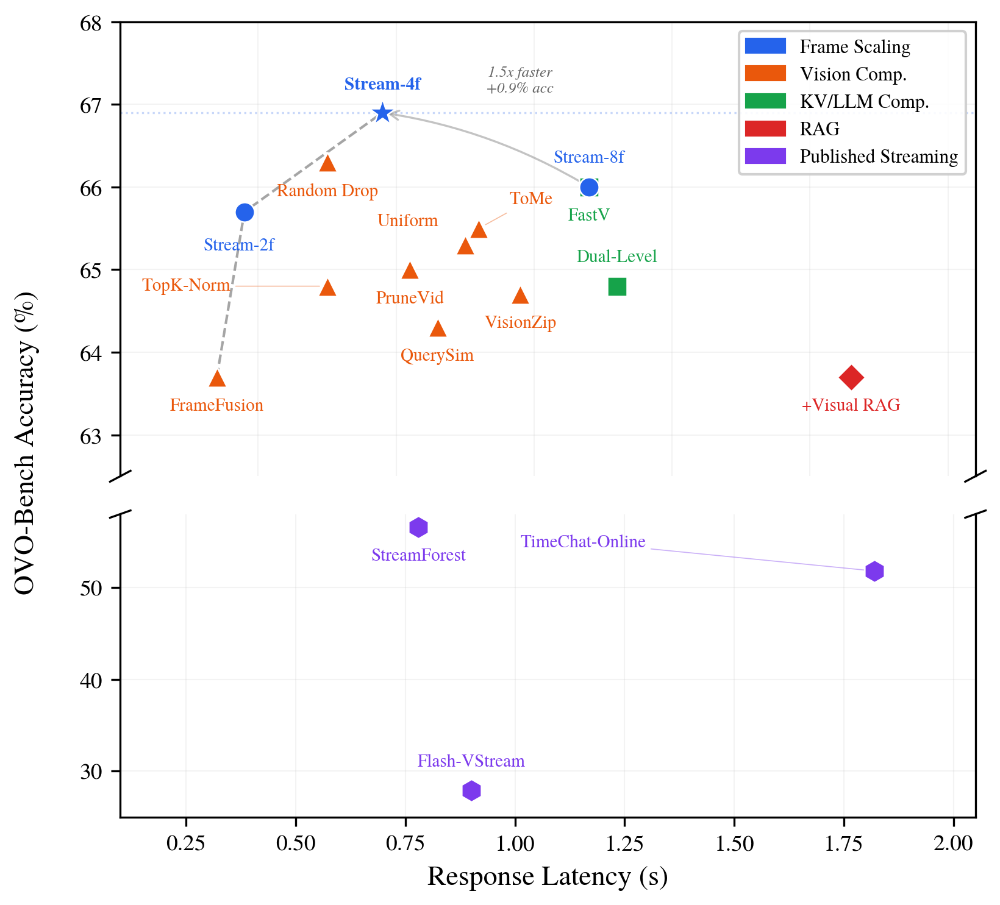
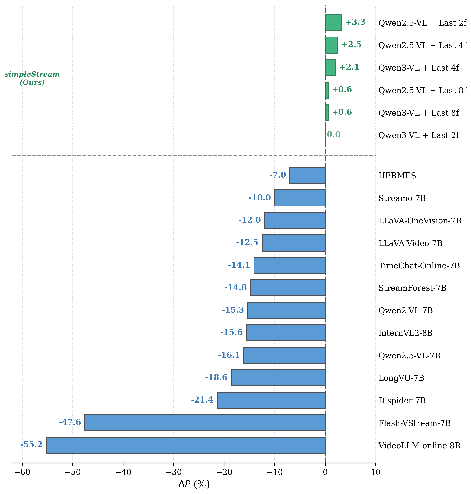

Recent streaming video understanding methods increasingly rely on complex memory mechanisms to handle long video streams. We challenge this trend with a simple finding: a sliding-window baseline that feeds only the most recent N frames to an off-the-shelf VLM already matches or surpasses published streaming models. We formalize this baseline as SimpleStream and evaluate it against 13 major offline and online video LLM baselines on OVO-Bench and StreamingBench. Despite its simplicity, SimpleStream delivers consistently strong performance. With only 4 recent frames, it reaches 67.7% average accuracy on OVO-Bench and 78.95% on StreamingBench. Controlled ablations further reveal a consistent perception-memory trade-off: adding more historical context can improve recall, but often weakens real-time perception. This suggests that stronger memory, retrieval, or compression modules should not be taken as evidence of progress unless they clearly outperform a strong recent-context baseline under the same protocol. We therefore argue that future streaming benchmarks should separate recent-scene perception from long-range memory, so that gains from added complexity can be evaluated more clearly.

Existing streaming methods add External Memory, Retrieval, Compression, or Latent Memory modules. SimpleStream uses only the most recent 4 frames as context.
1. Simple baselines are strong
Achieves 67.7% on OVO-Bench and 80.6% on StreamingBench under real-time evaluation, surpassing all 13 compared methods.
2. Perception-memory trade-off
More access to history can help recall, but it does not reliably improve overall performance and often weakens present-scene perception.
3. Longer context is not always better
Window size ablation shows accuracy is non-monotonic, peaking at 4 frames (67.7%). Beyond that, further growth yields flat or declining scores, contrary to the "more frames = better" assumption.
4. Benchmark design amplifies this advantage
Current benchmarks overweight perception-oriented tracks. Methods that preserve clear recent visual evidence are doubly rewarded: they align with backbone strengths and with how scores are computed.
Comparison on OVO-Bench and StreamingBench. "Avg." = mean of Real-Time and Backward category averages on OVO-Bench. "StreamingBench" = RTVU accuracy.
| Model | #Frames | StreamingBench | OVO RT Avg. | OVO Bwd Avg. | OVO Avg. |
|---|---|---|---|---|---|
| Offline Video LLMs | |||||
| Qwen2.5-VL-7B | 1 fps | 73.31 | 59.9 | 44.7 | 52.28 |
| LLaVA-OneVision-7B | 32 | 71.12 | 64.0 | 43.7 | 53.85 |
| Qwen2-VL-7B | 64 | 69.04 | 60.7 | 48.6 | 54.62 |
| Online / Streaming Video LLMs | |||||
| VideoLLM-online-8B | 2 fps | 35.99 | 20.8 | 17.7 | 19.26 |
| Flash-VStream-7B | 1 fps | 23.23 | 28.4 | 27.4 | 27.90 |
| Dispider-7B | 1 fps | 67.63 | 54.6 | 36.1 | 45.35 |
| TimeChat-Online-7B | 1 fps | 75.28 | 61.9 | 41.7 | 51.80 |
| StreamForest-7B | 1 fps | 77.26 | 61.2 | 52.0 | 56.60 |
| Streamo-7B | 1 fps | -- | 66.0 | 46.1 | 56.05 |
| HERMES-7B | 1 fps | 79.44 | 69.0 | 49.4 | 59.20 |
| SimpleStream (Ours) | |||||
| Qwen2.5-VL + 4f | 4 | 78.47 | 78.4 | 51.9 | 65.13 |
| Qwen2.5-VL + 8f | 8 | 79.11 | 76.6 | 50.8 | 63.70 |
| Qwen3-VL + 4f | 4 | 78.95 | 81.4 | 54.0 | 67.70 |
| Qwen3-VL + 8f | 8 | 78.83 | 79.9 | 54.9 | 67.37 |
SimpleStream variants occupy the upper-right quadrant (high perception + competitive memory), while published streaming methods cluster in the lower-left region.

SimpleStream with 4 frames is Pareto-optimal: highest accuracy at lowest latency among all compared configurations.

ΔP measures the perception cost of each method relative to a recency baseline. Every published streaming method shows negative ΔP, indicating perception degradation from added complexity.

@article{simplestream2026,
title = {A Simple Baseline for Streaming Video Understanding},
author = {Shen, Yujiao and Tian, Shulin and Yang, Jingkang and Liu, Ziwei},
journal = {arXiv preprint arXiv:2604.02317},
year = {2026},
}